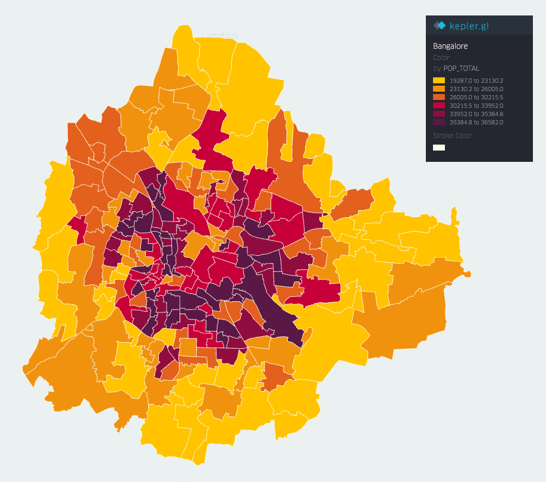

Introduction
This is a city-scale agent-based simulator, built based on the descriptions given in this
study of non-pharmaceutical interventions (from the Imperial College, London), this
paper on pandemics in SE Asia,
and
its associated
supplementary
material.
The simulator instantiates a smaller scale Bengaluru with population 100,000 across its 198 wards. The population distribution, employed fraction, age distribution, and household size distribution are based on 2011 census data (with scaling for population growth). Commute distances and workplace sizes are based on Thailand data given in the aforementioned supplementary material. Average school size is kept at 300.
Interventions implemented include:
The simulator instantiates a smaller scale Bengaluru with population 100,000 across its 198 wards. The population distribution, employed fraction, age distribution, and household size distribution are based on 2011 census data (with scaling for population growth). Commute distances and workplace sizes are based on Thailand data given in the aforementioned supplementary material. Average school size is kept at 300.
Interventions implemented include:
-
(a) case isolation,
(b) home quarantine,
(c) lockdown,
(d) case isolation and home quarantine,
(e) these two along with social distancing of those above 70 years of age,
(f) 21 days of lockdown, followed by 21 days of (e), followed by case isolation.
